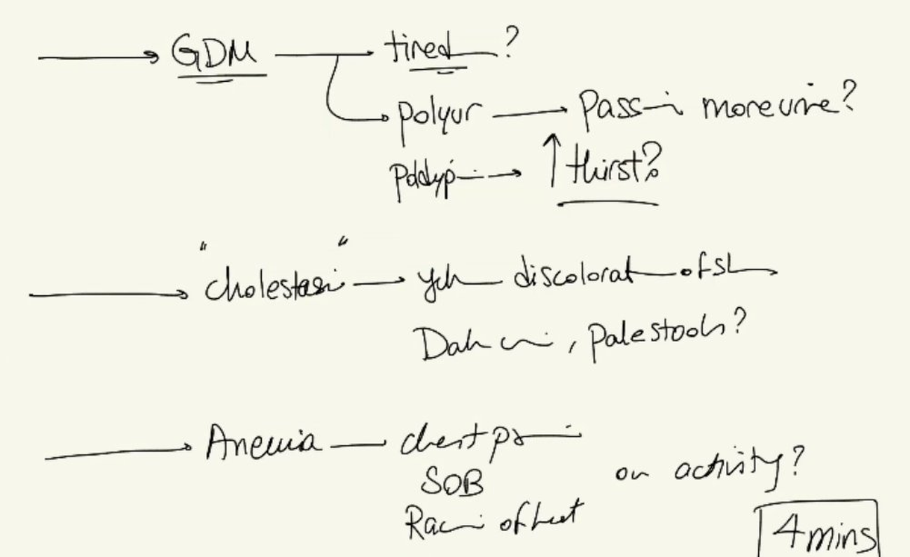
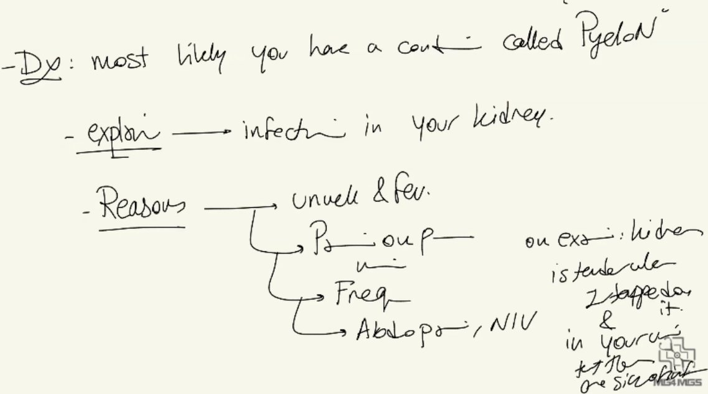
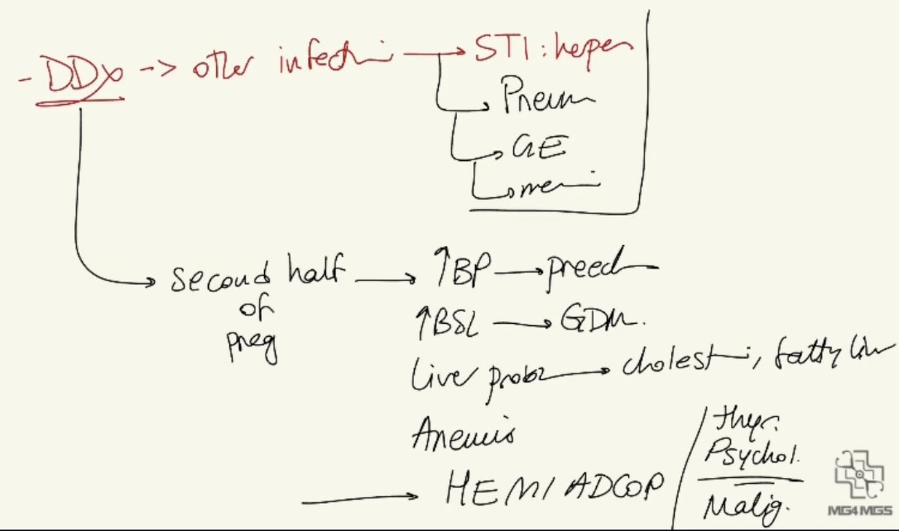

Source: Dr. Amir workshop — Med workshop 2 - 2026 / CLASS 5 UNWELL (Aug 2026 drop) · Specialty: general_practice
A 25-year-old woman at 20 weeks' gestation presents to the GP feeling unwell. Four tasks under time pressure: history (~4 min), examination from examiner, explain diagnosis + differentials, and explain management. Key examination card findings: positive renal angle tenderness and urine dipstick nitrites - i.e. an upper urinary tract infection / acute pyelonephritis in pregnancy.
Fever: measured temperature, chills, medications and response.
UTI / pyelonephritis (priority): dysuria, frequency, abdominal/flank pain (which side), nausea/vomiting. Right flank pain + dysuria + frequency = upper UTI pattern.
STIs (priority 2): genital rash/ulcer (herpes - important in pregnancy for birth-canal transmission), vaginal discharge or bleeding (chorioamnionitis).
Other infections: cough/sore throat (RTI), headache/rash (meningitis), travel.
Pre-eclampsia: antenatal screening/results, BP and BSL checks, headache, visual blurring, leg swelling.
Gestational diabetes: tiredness, polyuria, polydipsia.
Cholestasis/liver disease of pregnancy: jaundice, dark urine, pale stools, itch.
Anaemia: chest pain, shortness of breath, palpitations on exertion.
General appearance (jaundice, pallor, rash) and vital signs - BP and temperature are the critical vitals. ENT, respiratory, CVS. Abdomen: RUQ/liver tenderness, uterine tenderness, kidney ballotting; percussion for renal angle tenderness (positive); bowel sounds. Inspect genitalia for rash; no speculum/bimanual without vaginal symptoms.
Obstetric: always check fetal heart rate. Office tests: BSL; urine dipstick - leucocytes + nitrites (UTI confirmed) + protein (pre-eclampsia screen); positives here include nitrites, leucocytes and blood.
Explain pyelonephritis as a kidney infection, giving a full 'pack of reasons' (fever, dysuria, frequency, right flank pain, nausea, tender kidney on percussion, urinary signs of infection).
Differentials: other infections (herpes, pneumonia, gastroenteritis, meningitis); second-half pregnancy conditions (pre-eclampsia, gestational diabetes, cholestasis/acute fatty liver, anaemia); plus thyroid disorder, psychological and malignancy from the HEMI ADCOP list.
Admit via ED (call ambulance) - a severe kidney infection with high fever in a pregnant woman is taken seriously.



Reviewed by: history-taking-expert (Australian clinical supervisor) · fact-checked against the irStudy medical textbook RAG index.